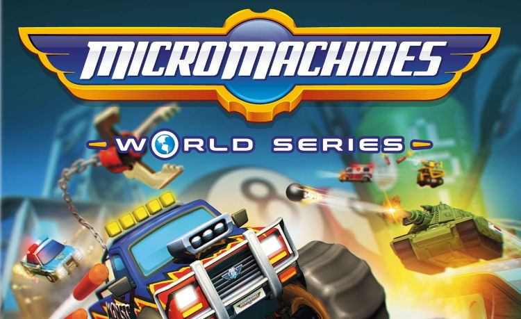

Codemasters muestra el primer gameplay de Micro Machines World Series

Codemasters se suma a la recuperación de los grandes éxitos de los años 80 y 90 con el desarrollo de Micro Machines World Series, juego del que hoy ha mostrado el primer tráiler que nos permite ver cómo luce el juego. El regreso de la clásica franquicia de Micro Machines en forma de videojuego se producirá el 23 de junio de 2017 en PlayStation 4, Xbox One y Windows PC mediante Steam.
El primer gameplay tráiler de Micro Machines World Series se centra en enseñar algunos de los nuevos Modos de Batalla que permiten a un máximo de 12 jugadores competir en diferentes arenas y varios modos de juego. Entre los modos confirmados tenemos Rey de la Montaña, Capturar la Bandera, Arena de Combate y 6 vs.6 en Team Deathmatch. Todos ellos se desarrollarán a lo largo de 15 arenas de batalla incluyendo The Laser Lab, Buzzsaw Battle o Hungry Hungry Hippos.
En los Modos de Batalla los jugadores podrán elegir entre varios vehículos en miniatura (incluyendo el G.I. Joe Hiss Tank), cada uno con sus habilidades y arsenal de armas únicas, además una variedad de opciones personalizables. Entre el armamento disponible tenemos la Torreta Cobra o Nerf Blasters.
Aquellos que añoren la jugabilidad clásica también tendrán disponibles las carreras de Micro Machines en el modo Eliminación y Carrera. En ellos también se ofrecen una gran variedad de armas y 10 pistas interactivas con teletransportes, catapultas y ventiladores gigantes en localizaciones como la cocina, mesas de billar, el jardín o el taller.
Para que Micro Machines World Series nos transporte de lleno al pasado Codemasters también se ha asegurado otras licencias de Hasbro como Nerf, G.I. Joe, Hungry Hungry Hippos (Tragabolas) o Ouija. Además de poder jugar en línea con 12 jugadores, Micro Machines World Series también ofrecerá un multijugador local con un modo en pantalla partida para 4 participantes.
Los requisitos mínimos de Micro Machines World Series para Windows PC piden un Intel Core i3, 4 GB de RAM y una tarjeta gráfica AMD Radeon HD 5570 o Nvidia GT 440 con 1 GB de VRAM. Los requisitos recomendados exigen un equipo con un Intel Core i5 4690 o AMD FX 8320, 8 GB de RAM y tarjeta gráfica AMD Radeon 290X o Nvidia GTX 970.
Fuentes: Codemasters - ElOtroLado.net